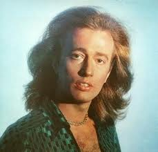
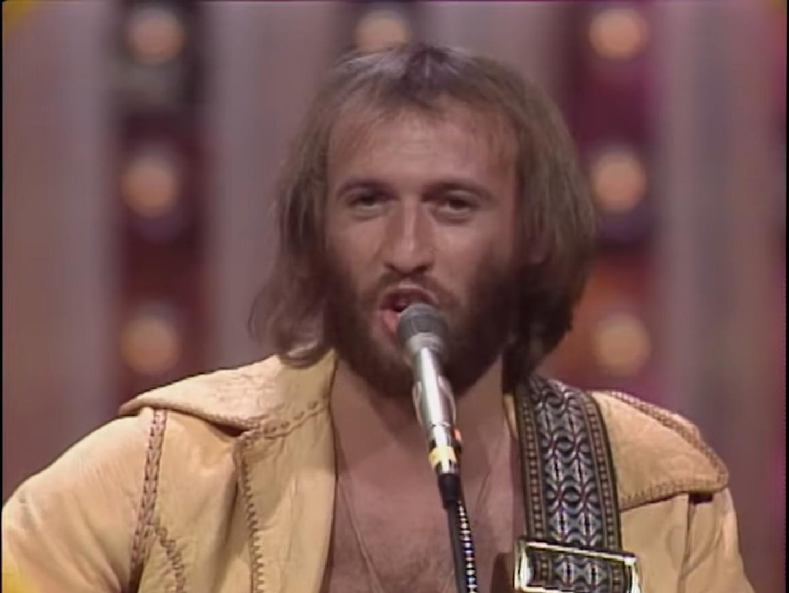

Quienes Somos
Barry Gibb

Barry Alan Crompton Gibb(Douglas, Isla de Man, 1 de septiembre de 1946), conocido como Barry Gibb, es un
cantautor,
compositor, músico y productor británico. Saltó a la fama en compañía de sus hermanos menores, los mellizos
Robin y
Maurice Gibb, con quienes fundó la agrupación los Bee Gees, de la que es el último sobreviviente.
Robin Gibb

Robin Hugh Crompton Gibb (Douglas, 22 de diciembre de 1949-Londres, 20 de mayo de 2012) fue un cantautor,
compositor y
productor discográfico británico. Saltó a la fama en compañía de sus hermanos, Barry y su mellizo Maurice Gibb
formando
el grupo de los Bee Gees. También tuvo su propia exitosa carrera en solitario.
Maurice Gibb

Maurice Ernest Gibb (Douglas, 22 de diciembre de 1949-Miami Beach, 12 de enero de 2003) fue un músico, cantante,
compositor, multiinstrumentista y productor musical británico que alcanzó la fama como miembro del grupo Bee Gees.
Aunque sus hermanos Barry y Robin eran los cantantes principales del grupo, la mayoría de sus álbumes incluían al
menos
una o dos composiciones por Maurice, entre las que se encuentran «Lay it on me», «Country woman» y «On time». Los
Bee
Gees fueron uno de los grupos de rock-pop más exitosos que jamás hayan existido. El papel de Maurice en el grupo
estuvo enfocado en las melodías y los arreglos, proporcionando armonía vocal de fondo y tocando diferentes
instrumentos.